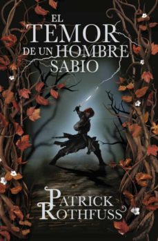

-
El Hobbit
Smaug parecía profundamente dormido cuando Bilbo espió una vez más desde la entrada. ¡Pero fingía estar dormido! ¡Estaba vigilando la entrada del túnel!... Sacado de su cómodo agujero-hobbit por Gandalf y una banda de enanos, Bilbo se encuentra de pronto en medio de una conspiración que pretende apoderarse del tesoro de Smaug el Magnífico...
Leer más -
El nombre del viento
En una posada en tierra de nadie, un hombre se dispone a relatar, por primera vez, la auténtica historia de su vida. Una historia que únicamente él conoce y que ha quedado diluida tras los rumores, las conjeturas y los cuentos de taberna que le han convertido en un personaje legendario a quien todos daban ya por muerto: Kvothe... músico, mendigo, ladrón, estudiante, mago, héroe y asesino.
Leer más -

El temor de un hombre sabio
"Todo hombre sabio teme tres cosas: la tormenta en el mar, la noche sin luna y la ira de un hombre amable." El hombre había desaparecido. El mito no. Músico, mendigo, ladrón, estudiante, mago, trotamundos, heroe y asesino, Kvothe había borrado su rastro. Y ni siquiera ahora que le han encontrado, ni siquiera ahora que las tinieblas invaden los rincones del mundo, está dispuesto a regresar. Pero su historia prosigue, la aventura continúa, y Kvothe seguirá contándola para revelar la verdad tras la leyenda."
Leer más
LA MADRIGUERA